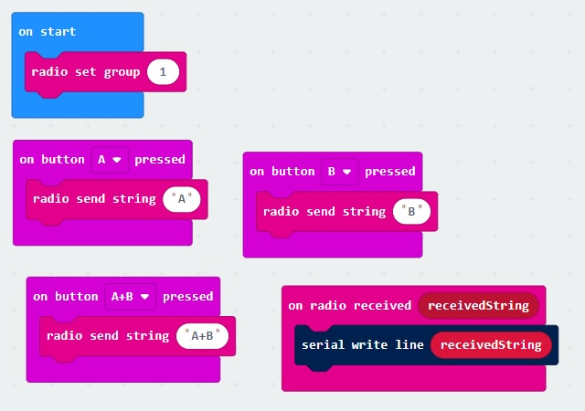

Micro-bit radio
Each micro-bit comes with its own radio. Two micro-bits can pass text back and forth when set to the same group.
Here is a routine which responds to sends the name of the button pressed to the other radio.
It will also print out any radio message on the console.
